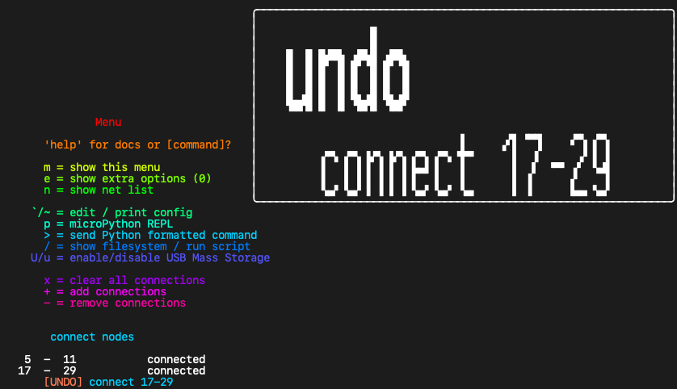
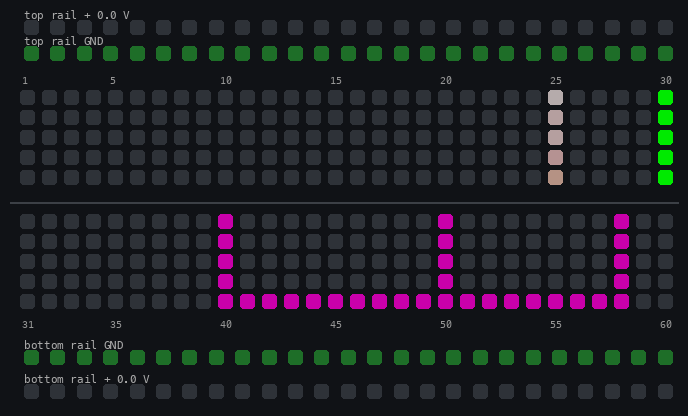
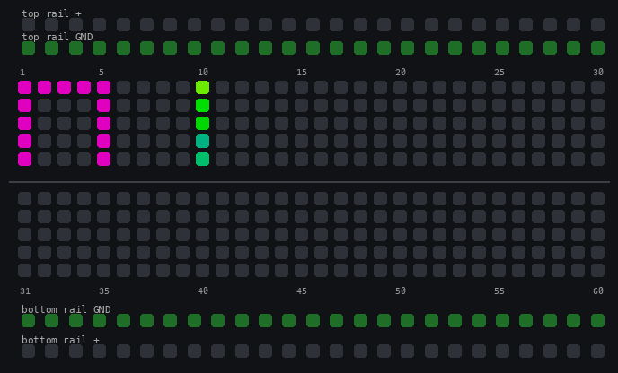

Getting Started
This page walks you through the first hour with a Jumperless V5. Each section ends with a little Try it box you can follow along with on the board. If you'd rather just poke at it and come back when something confuses you, that works too.
What's in the box
- The Jumperless. The breadboard with the RP2350 and 12 crossbar switches underneath it.
- The probe. Plugs into the socket on the right side of the board. It has a
Select/Measureswitch and two buttons,Connect(front) andRemove(rear). - A little breakout board and a ribbon cable. It brings the DACs, GPIO, and a few other signals out to pin headers so you can clip a scope or meter to them. It's optional, you don't need it for anything on this page.
- A sheet of stick-on rubber feet. These are for the 3D printed stand, which isn't in the box because it doesn't fit.
Two things that are not in the box but you'll probably want: a stand and an OLED. The OLED copies everything the breadboard LEDs say into actual text, and a few interactions are easier with one. On rev 7 boards it plugs straight into the pin headers on the board; on rev 5 boards (Crowd Supply and Mouser) it goes on the breakout board.
Plug it in
Plug in the USB-C and it will do a startup animation on the LEDs. That's it, it's on.
It also shows up on your computer as four serial ports. The first one is the main terminal, where the menu shows up when you type m and where most of the typed commands on this site go. You don't need the terminal for anything on this page, but it's useful to have open because everything the board prints on the LEDs gets printed there too. The easiest way to open it is the App, but any serial terminal works (the baud rate doesn't matter).
When it boots it loads the last slot you were using, so your circuit is still there after a power cycle.
Try it
- Plug in the Jumperless and watch the startup animation.
- Open the first serial port in the App or a terminal.
- Type
mto print the menu, or?to see the firmware version.
The probe
Keep the switch on the probe set to Select. That's the normal probing mode.
Measure turns the probe into a voltmeter: the logo goes purple, and touching any row reads its voltage on the OLED and in the terminal. It uses a temporary ADC connection that never gets saved, so you can poke around without changing your circuit.
The probe is read by a resistive voltage divider, so putting your fingers on the pads (or the back sides of the 4 risers that connect the probe sense boards to the main board) will give you weird readings. If taps land on the wrong row, run Calibration > Probe Pads from the click wheel menu and follow the prompts.
Connecting rows
Click the Connect button on the probe.
The logo turns blue and the probe LEDs change.
Now tap two rows and they get connected. Connections are made in pairs (a bridge, see the glossary). When you've tapped the first row, the logo and the Connect text on the probe brighten to show you're holding it, and the next thing you tap connects to it. A wire shows up on the LEDs between them.
Anything can be an end of a bridge: breadboard rows, the rails (+ and - pads at the ends of the rail strips), the Nano header pins, and the special functions pads by the logo.
- Click
Connectwhileholdinga row to drop it and start over. - Click
Connectwhile notholdinganything to leaveConnectmode and go back toidle(rainbowlogo, all 3 probe LEDs on). - Made a connection you didn't mean to? Double-tap
Removeto undo it. See Undo / Redo.
Try it
- Click
Connect. The logo turns blue. - Tap
row 1, thenrow 5. A wire appears between them. - Tap
row 5again, then the-pad on the bottom rail. Now rows 1 and 5 are both onGND, and the wholenetshares one color. - Click
Connectagain to get back to idle.
Connecting with just the click wheel
You can also make connections without touching the probe to the board: Click > Connect > Add (or Remove), or just turn the wheel while you're already in Connect mode. Turning the wheel scrolls a cursor through every node (rows, Nano pins, rails, DACs, ADCs, GPIO, UART, current sense), click selects the one it's on, hold exits. The cursor hides itself after 5 seconds without a turn.
Removing rows
Click the Remove button.
The logo goes red.
Now tap a row (or swipe along a few) and it gets disconnected. It only removes that node and what's connected directly to it, not everything on the net. So tapping a row 25 that's on GND doesn't clear everything on GND, but tapping the - rail pad does.
The special function pads work the same way in Remove mode: tap the pad, pick the function, and it's gone. Click Remove again to leave.
Try it
- Click
Remove. The logo turns red. - Tap
row 1. The wire to row 5 disappears, and row 5 is still onGND. - Tap the
-pad on the bottom rail. Row 5 comes offGNDtoo. - Click
Removeto get back to idle.
Undo / Redo
Every change to your circuit gets recorded, and there are two ways back through it.
Double-tap Remove to undo, double-tap Connect to redo. The logo flashes yellow and the OLED shows what got reverted.

To walk back further, click the wheel, find History, and click in. Now turning the wheel scrubs through every change, two detents a step: clockwise steps back in time, counterclockwise steps forward. The breadboard updates live as you go so you can see each state, and the OLED shows where you are (3/12) and what that change was. Click the wheel (or press Connect) to keep where you stopped, hold (or press Remove) to go back to where you started.
In the terminal, ^ is undo and & is redo.
The history is saved with your slots, so it's still there after a power cycle. Undo only ever touches the live circuit.
Try it
- Connect
row 10torow 15, thenrow 15torow 20. - Double-tap
Remove. The last wire disappears. - Double-tap
Connect. It comes back. Clickthe wheel, scroll toHistory,click, and turn the wheel back and forth.Holdto leave it where it was.
The click wheel
There are two kinds of presses: click (short) and hold (long). In general a click is yes / go in, and a hold is no / back / get me out of here.
When I say click, it's more of a diagonal push toward the center of the board (these encoders were meant to poke out a little from the side of a tablet).
Click to open the menu, turn to scroll, click to go into a submenu, hold to back out one level. The menu draws on the breadboard LEDs, and it's copied to the terminal and the OLED if you have one. If the text on the LEDs is hard to read, turn up the brightness: Display Options > Bright > Menu, scroll to a level you like, and click.
Try it
Clickthe wheel. The menu shows up on the LEDs (and the terminal).- Turn it to scroll through
Rails,Connect,Parts,GPIO,Output,Show,Appsand the rest. - Scroll to
Display Options>Bright>Menuand pick a brightness.Clickto set it. Holda couple of times to get all the way out.
Power: rails and DACs
There are four adjustable voltage sources: the top rail, the bottom rail, DAC 0, and DAC 1. All of them go from -8 V to +8 V.
Rails are the easiest. Click the wheel, pick Rails, then Top, Bottom, or Both. Turn the wheel to pick a voltage, click to set it, hold to cancel. The rail strips light up with the voltage (red for positive, blue for negative), and the + pads on the ends of the rails are now that voltage. The - pads are always GND.
DACs are the same idea but they're nodes you connect to a row rather than a whole strip: Output > Voltage > DAC 0 / DAC 1, pick the voltage, then pick a row. You can also tap the DAC pad by the logo while probing (see special functions). By default DAC 0 is busy powering the probe, so DAC 1 is the one to reach for.
Shortcut: in idle mode, tap a rail + pad to highlight it, then click the wheel to adjust that voltage right there. Same for a DAC, once it's connected to something. This shortcut is on by default only when an OLED is connected, because the OLED's adjust? hint is what makes it discoverable. To have it always on, put this in your config:
Type it into the terminal, backtick and all (the backtick is the config command):
`[clickwheel] rail_click_adjust = always;
Rail and DAC voltages are saved with the slot, so each circuit keeps its own power settings.
Try it
Clickthe wheel, pickRails>Top, turn until it says3.3, andclick. The top rail strip lights up.- Click
Connect, tap the top rail+pad, thenrow 10. Row 10 is now at 3.3 V. - Flip the probe switch to
Measureand touch row 10. The OLED / terminal reads about 3.3 V. Flip it back toSelect.
Special functions
The three pads next to the logo, DAC, GPIO, and ADC, are how you connect the internal stuff to your circuit. Tap one while probing and a chooser shows up on the breadboard LEDs (and the terminal / OLED), pick what you want, then tap the row to connect it to. If you were already holding a row, it connects there.
Think of them as nodes that are in a folder, so there didn't need to be a dedicated pad for each one.
DAC Pad
└─ 0 1 [Tap the pads below the selection]
└─ -8V !:.:! +8V [Tap the bottom pads or turn the clickwheel to pick a voltage] > [click Connect to confirm]
└─ [Tap a row to connect it to]
GPIO Pad
└─ ⁱ1⁰ ⁱ2⁰ ⁱ3⁰ ⁱ4⁰
₁5₀ ₁6₀ ₁7₀ ₁8₀ [Tap a number: left side for input, right side for output]
└─ [Tap a row to connect it to]
ADC Pad
└─ 0 1 2 3 4 P [Tap an ADC, 0-3 are the general purpose ±8 V ones]
└─ [Tap a row to connect it to, and its voltage shows on the LEDs]
The four user pads (the two little guys and the two buildings) are shortcuts to a fixed set: top guy is UART Tx, bottom guy is UART Rx, and the two buildings are the current sense inputs I+ and I-. You can reassign them in the config under [logo_pads].
Try it
- Click
Connect, then tap theGPIOpad by the logo. - Tap the right side of the
1(output). Then taprow 20.GPIO 1is now driving row 20. - Click
Connectto go back to idle, and tap row 20 to highlight it. Now clickConnectand watch the row toggle between high and low. - Everything here is a normal connection, so
Removemode and undo work on it the same way.
Measuring things
A few ways to see what your circuit is doing:
- Just tap it. The board is always measuring voltage and current in the background, so leave the switch in
select, tap a row (or scroll to it with the click wheel) and the OLED and terminal show the voltage on that net and the current flowing through that connection. Nothing to set up. - The probe's
Measureswitch. Touch a row, read the voltage. Nothing gets saved. - The
ADCpad. Connect an ADC to a row and it stays there, showing the voltage on that row's LEDs and, if you highlight it, on the OLED / terminal. The ADCs read -8 V to +8 V. - The
Showmenu.Show>Voltage/Digital/Currentpicks a measurement and a row to put it on from the wheel instead of the probe. - Current sense. Tap the
buildingpads inConnectmode to getI+(top) andI-(bottom). Put them on two differentnets and a virtual wire with "marching ants" shows the current flowing between them. (The background scan puts ants on any wire with current flowing too,[measurement] net_currents = 0;in the config turns it off.)
Idle mode currents are a bit rough
They're read using the crossbar's own resistance as the shunt (about 40Ω per crosspoint) with one ADC multiplexed across every net, so connecting current sense (I+ / I-) manually is a bit more accurate.
I+ and I- are shorted together internally
They're the two ends of a 2 Ω shunt resistor. You measure current in series so this is expected, but it's easy to forget. Treat this like your multimeter yelling at you when the probes are in the current holes and it's set to volts.
Try it
- Set the top rail to 3.3 V (
Rails>Top, see Power), then put an LED and a resistor (anything 220 Ω to 1 kΩ) in series betweenrow 10androw 12, LED long leg toward row 10. - Click
Connect, tap the top rail+, thenrow 10. Then tap the topbuildingpad (I+) androw 12. Then tap the bottombuildingpad (I-) and the-rail pad. - The LED lights, and the ants march from
I+toI-. The OLED shows the current as soon asI+andI-are connected (the net is calledI Sense), and tapping row 12 in idle mode shows it on the terminal too.
Idle mode
Most of the time the probe isn't in a mode (rainbow logo), and there's a lot you can do from here:
- Tap a row to highlight its
net. The row you tapped gets a slightly different animation from the rest of the net. - Turn the click wheel to walk the highlight along the rows, as if you tapped each one.
Connectputs you inConnectmode alreadyholdingthe row you tapped, and drops you back to idle once you've connected it to something. (If you got to the row by turning the wheel instead of tapping it, you start out holding nothing.)Removeflashes a warning on the highlighted net; press it again within a second or so and you're inRemovemode with thatnodealready picked.- The highlighted net's voltage and current print on the OLED and the terminal, whatever is on it. A
GPIOinput or anADCon the net shows its reading too. - If it has a
GPIOoutput on it,Connecttoggles it high / low. - If it's a rail or a DAC,
clickthe wheel to adjust the voltage. - If it's a
GPIO, a quickclickopens that pin's options. See GPIO. - If it's a pin of a placed part, the OLED shows the part and pin name. See Parts.
Try it
- Tap any connected row. Its whole net lights up.

2. Turn the wheel a few detents each way. The highlight walks along the rows. 3. PressConnect, tap another row, and you're back in idle with a new wire.
Slots
There are 8 slots (0-7), and each one is a saved circuit: connections, rail and DAC voltages, GPIO setup, colors. Everything you do with the probe saves into the active slot automatically, so you don't have to save anything. Switching slots switches the whole circuit.
Click>Slots>Loadpicks a slot to switch to.Slots>Save tocopies the current circuit into another slot.Slots>Clearempties a slot.- In the terminal,
<cycles to the next slot (it wraps from 7 back to 0), and<3jumps to slot 3.
On boot it loads the last slot you had active. If you'd rather always start on one particular slot, set [slots] boot_mode = fixed_slot; and boot_slot in the config.
The slot files are plain YAML on the board's filesystem, so you can also read and edit them by hand. See File Manager.
Try it
- With a few connections made,
click>Slots>Save to>1. Slots>Load>2. Empty board (or whatever was in slot 2).Slots>Load>1. Your circuit is back.
From the terminal
Everything above can also be done by typing. Open the first serial port (the App does this for you) and type m to print the menu. A few to know:
m show the menu again
n show the net list (what's connected to what)
+ 1-5,10-gnd add connections
- 1-5 remove a connection
x clear all connections
< next slot (or <3 for slot 3)
p MicroPython REPL
/ file manager (or /python_scripts/examples/gpio_basics.py to run a script)
U show up as a USB drive
p and / take over the terminal, Ctrl+Q gets you back out of both. A script you run leaves whatever it connected on the board, x clears it.
Type help or [command]? for the onboard docs on any of them, and e to show more of the menu.
Try it
- Type
+ 1-5and watch the wire appear on the board. - Type
nto see it in the net list. - Type
- 1-5to remove it.

Where to go next
- Examples - the MicroPython scripts and guided projects already on the board. A good next step is the 555 LED flasher project, which shows you where each part of a real circuit goes.
- The App - the terminal, Wokwi import, and Arduino flashing from one place.
- OLED - add a screen. Cheap, and it makes a lot of this easier.
- Arduino Stuff - drop a Nano in the header, flash it through the Jumperless, and let it send commands back.
- Parts - tell the Jumperless what chips are in the board and it wires and labels them for you.
- GPIO - direction, pulls, PWM, and a binary counter, all from the board.
- MicroPython - script the circuit itself. JumperIDE is the easiest way in.
- Config File - every setting, including the ones mentioned on this page.
- Debug Views - the net list, bridge array, and crossbar views for when something isn't doing what you expect.
- Automation & LLM Tools - drive the board from scripts, an MCP server, or an agent skill.
- Glossary - what I mean by
net,node,row,bridge, andslot.
And if you get stuck, ask in the Discord. Seriously, even the dumb questions help me figure out what to put here.